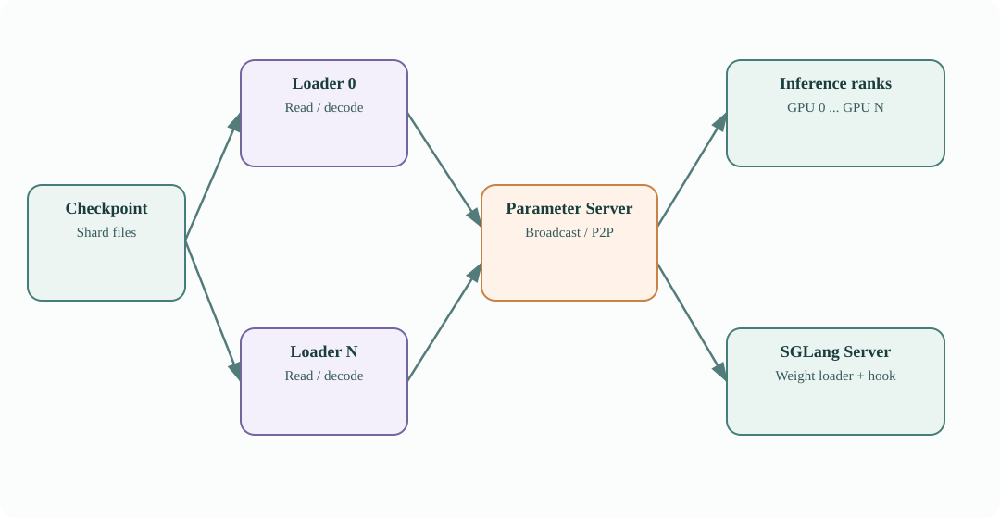
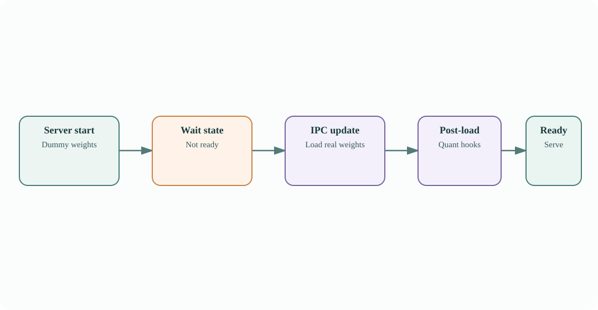

第 30 章 · SGLang 生产推理机制
Distributed Checkpoint Engine：并行加载、IPC 与 Ready Barrier
深入 SGLang Checkpoint Engine 的 Parameter Server、Broadcast/P2P、IPC weight update、post-load hook 与 Server Ready 生命周期。
深入 SGLang Checkpoint Engine 的 Parameter Server、Broadcast/P2P、IPC weight update、post-load hook 与 Server Ready 生命周期。 本章区分研究论文的算法贡献、SGLang 当前源码实现、CPU-only 教学模型与硬件/部署限制。所有实现断言固定到 2026-11-23 的上游快照。
读完本章，你应该能
- 从请求入口追踪到对应的运行时状态、缓存或执行组件。
- 解释关键数据结构、数学关系、并发边界和失败模式。
- 使用可复现的 CPU-only toy 实验验证核心不变量，而不把教学代码误称为生产内核。
1. 大模型启动的瓶颈不只是读盘
大模型服务启动时，需要从 checkpoint 读取大量 tensor、按 TP/PP 等并行拓扑分配权重、在目标设备写入参数，并执行量化或模型特定的 post-load processing。单进程读盘可能无法充分利用多节点存储带宽；跨节点启动也可能受 CPU 解码、网络传输和 GPU IPC 限制。Checkpoint Engine 将 checkpoint loading 从单一 server worker 中拆出来，使用独立 loader workers 并行读取和分发权重。它的目标是降低初始化权重的关键路径，不是替代 SGLang 的模型执行或 attention runtime。

2. 两类进程：SGLang Server 与 Checkpoint Workers
SGLang Server 负责构建模型运行时、scheduler、KV pool 和执行资源；Checkpoint Engine workers 由 torchrun 等方式启动，负责加载 checkpoint 并把权重分发给 inference ranks。两者通过约定的并行规模和设备标识对齐。Server 可以使用 --load-format dummy 初始化模型结构，并通过 --checkpoint-engine-wait-weights-before-ready 等待真实权重注入后再进入 ready 状态。Dummy weights 不是可以对外服务的真实模型权重。
3. Parameter Server：Broadcast、P2P 与 All
当前文档列出三种 update method：Broadcast 将 loader 侧权重广播给 inference ranks；P2P 让 peer 之间直接传输；All 组合两种方式。实际选择取决于 loader/inference ranks 拓扑、节点间网络、设备间传输能力和权重切分方式。不要把 P2P 理解成“没有通信成本”，也不要把 Broadcast 理解成所有权重只读一次。真实数据流还受到 rank mapping、通信组、buffer 生命周期和每个 shard 大小影响。
4. Startup lifecycle：权重到齐之前不能 Ready
典型启动过程：先启动 SGLang server（dummy load + wait flag）→ 启动 checkpoint workers → workers 读取 checkpoint shards → Parameter Server 建立 broadcast / P2P 传输 → inference ranks 接收 IPC handles → model loader 写入权重 → 执行 quantization post-load hooks 与 model-specific post-load → rank 间同步 → 标记 initial weights loaded → ready endpoint 返回成功。ready 是一个生命周期门槛，不只是 HTTP server 已经监听端口。服务端可能已经能接受 TCP 连接，但仍未具备安全执行真实模型请求的条件。

5. IPC Worker Extension：Device UUID、Loader 与 Post Hook
SGLangCheckpointEngineWorkerExtension 将设备 UUID、device ID、model loader 和 post hook 暴露给 checkpoint-engine worker。具体实现把 model_runner.model.load_weights 作为 loader；post hook 会调用 quantization method 的 process_weights_after_loading，并执行模型自定义 post_load_weights。这很关键：Checkpoint Engine 不应绕开 SGLang 的权重加载契约。权重写进参数张量后，仍可能需要 packing、scale/layout 转换、量化方法后处理和模型特定派生参数构建。
6. `/update_weights_from_ipc`：Server 侧更新路径
Checkpoint workers 将 device UUID 到 ZMQ socket path 的 handles 发送到 server 的/update_weights_from_ipc endpoint。TokenizerManager / SchedulerWeightUpdaterManager 再调用各 runner 的 WeightUpdater，通过 IPC worker extension 接收权重。更新完成后需要进行 rank barrier，并由 server 更新 initial_weights_loaded 状态。源码路径：HTTP IPC endpoint · SchedulerWeightUpdaterManager.update_weights_from_ipc · WeightUpdater.update_weights_from_ipc。
7. 并行规模、权重一致性与失败处理
Checkpoint worker 的 inference_parallel_size 必须与 server 侧目标 ranks 对齐；多节点配置还需要一致的 rendezvous、master address/port、node rank 和通信环境。部分更新失败时不能假设所有 TP ranks 都处于同一权重版本。SGLang 的其他权重更新路径还包括 checksum / weight version 检查；这些机制用于识别更新一致性问题。另外，模型包含派生权重 cache 或 CUDA Graph 引用时，在线更新可能受到限制。WeightUpdater 源码会在某些 derived-weight cache 仍激活时拒绝更新，避免 server 静默继续使用旧的派生参数。
8. 安全与运维：Admin Key 是控制面凭证
Checkpoint Engine 通过 admin endpoint 更新权重；server 与 update script 必须使用相同的 SGLANG_ADMIN_API_KEY。这个 key 属于控制面凭证，不应写入日志、仓库、命令历史或暴露在公网。endpoint 应只在受控网络内开放，并使用最小权限、审计与轮换策略。启动优化需要测量完整冷启动关键路径：存储读取、CPU deserialize、网络传输、GPU IPC、post-load 与 ready time。若瓶颈在 GPU post-load 或单一网络链路，多加 loader worker 不一定更快。
9. 交互：选择机制配置
Mechanism selector
广播路径：适合 loader ranks 向多个 inference ranks 分发同一组权重时使用；要考虑通信组、buffer 和每个 rank 的接收成本。
点对点路径：允许 peer 之间直接传输，可能更好地利用拓扑，但要求 device UUID、rank mapping、socket handles 与生命周期正确对齐。
组合路径：把 Broadcast 与 P2P 组合使用；是否更快取决于实际网络、磁盘、CPU 和 GPU 资源，不应只按模式名称判断。
交互只改变教学状态，不会启动真实 SGLang server 或调用 GPU kernel。
10. 源码阅读路线与参考资料
- Checkpoint Engine Integration docs：单机、多机、TP 与配置选项。
- checkpoint_engine/update.py：checkpoint split、ParameterServer 与 update method。
- checkpoint_engine_worker.py：IPC worker extension 与 post-load hooks。
- scheduler_components/weight_updater.py：server 侧 IPC 更新与 rank barrier。
- model_runner_components/weight_updater.py：runner 侧接收与权重加载。
实现快照：sgl-project/sglang@563813c0d60282fa848382fec600b40d28ddec98。Checkpoint Engine 优化的是权重初始化/注入路径，不代表 KV cache、模型执行和服务 ready 之后的请求延迟也会同比改善。